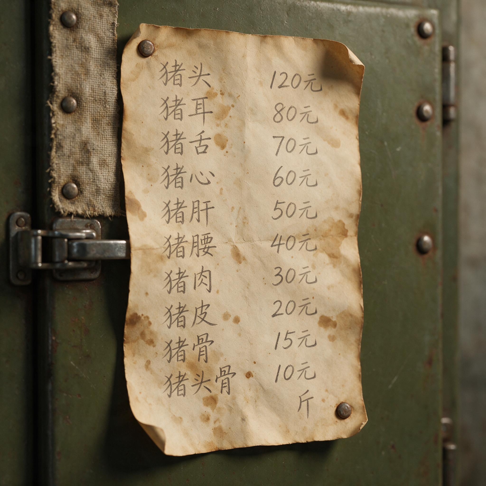

第 14 章
野味共和国的屠夫
1974年6月17日签发的冷库库存价目单，至今仍贴在库门内侧。这份写在黄色拍纸簿内页上的文书，纸边已被水汽浸得卷曲，灰绿色霉斑从角落渗开。七行铅笔字迹方正，出自建筑承包商之手：

老旧冷库内贴着的野味价目单
AI 生成插图，非史实影像。
整猪（胴体）——每磅0.45美元 里脊肉——每磅3.50美元 后腿肉——每磅2.25美元 前肩肉——每磅1.80美元 排骨——每磅1.50美元 野猪头（欧洲博览会）——每只20美元
最后一行是后来补上的，铅笔压得比其他行都深，像是用力写了几遍。里脊肉的价格改过三次，整猪胴体的收购价从来没动过。南卡罗来纳低地地区这家小型野猪加工厂，每周处理约八十头野猪。它们来自方圆一百英里内的猎手和陷阱师，这些人开着皮卡把放完血、去净内脏的猪送来。冷库能挂九十五头胴体，再多就堆到走廊，盖上塑料布，祈祷夜间温度不回升。
工厂主合上冷库门，回到前头的小办公室。桌上摊着一本黑色硬皮账本，旁边摞着几份粉红色的复写纸单据，是上周送检的旋毛虫检测报告。他翻开账本，手指沿着日期栏往下走。
三月的第三周，进厂六十四头猪。第四周，七十一头。四月第一周，天气回暖，猎手出动得更勤，进来八十三头。他在这行干了六年，知道四月的曲线会继续往上走，到猎季结束前，总会有一两周超过他的处理能力。那时他就得打电话给猎手，说先别送来，再打我也收不了。猎手们通常能理解，但他们也没有别的地方可送。
这片低地地区三家加工点，另外两家规模更小，一个只做香肠，另一个只接收预先处理好的四分之一胴体。账本翻到前一年的同一周。那一周他拒收了十九头猪。理由写在备注栏里：冷库满。再往前翻两年，备注栏写着同样的三个字。
这个加工厂的交易半径大约一百英里，往北到哥伦比亚郊区，往南到萨凡纳河，往东到大西洋岸边的沼泽地带。猎手们开着皮卡或厢式货车来，后车厢里铺着防水布，猪身上盖着冰块。他们通常凌晨出发，赶在中午前到厂，因为午后的温度会让胴体开始变质。到达时猪已经放了血，在树林里就完成了初步处理——猎手们管这叫“田野处理”，用一把六英寸的剥皮刀，从胸骨划到骨盆，掏出内脏，填进冰袋。这不是工厂要求的流程，是几十年的惯例。猎手们自己发展出这套方法，因为野猪肉比家猪肉更容易腐败，野猪的体温高，猎杀后细菌繁殖得比白尾鹿快得多。
工厂主最初几年做过建筑承包商。他熟悉水泥标号、地基承载力、楼板跨度表。
转行第一年，他发现屠宰间的知识可以用类似的逻辑来组织：温度曲线对应水泥凝固曲线，胴体分割对应模板切割，冷库气流循环对应暖通设计。但这种类比解决不了核心问题。建筑业的利润是可以算出来的：材料费、人工、机械台班、管理费，加起来乘一个合理的利润率。他每个项目开工前就知道能赚多少。而野猪加工业的利润是猜出来的：你不确定下周会来多少头猪，不确定检测报告会不会在某一批次里查出旋毛虫，不确定冷库压缩机还能撑几个夏天。
他把账本合上，从桌上那摞单据里抽出一张。是商业实验室出具的旋毛虫消化法检测报告。样品编号对应三天前入厂的三头猪，来自马里恩县的一个猎手。三份样本均为阴性。检测费是一百二十美元，平摊到每头猪上四十美元。那三头猪的胴体重加起来大约三百八十磅，整猪收购价四十五美分一磅，他付给猎手一百七十一美元。加工、分割、包装、冷冻，加上检测成本，这三头猪如果全部以里脊肉和后腿肉的价格卖出去，他大约能赚六十到八十美元。
但如果其中任何一头检出旋毛虫阳性，整批肉必须销毁——不是深埋就是焚化——他损失的是收购成本、检测费和处理费。
他把报告夹进账本里，站起来走进屠宰间。屠宰间在仓库后部，混凝土地面有半度的倾斜，通向中央的排水槽。墙上装着不锈钢操作台和两架手动绞车。一个工人正把半扇猪从轨道上推过来，胴体表面凝着一层薄霜，是冷库里挂了十二个小时的结果。工厂主接过来，用手背试了试肌肉的硬度。冷藏后的胴体更容易分割，筋膜不会在刀下打滑。他拿起刀，从第五和第六肋骨之间下刀，切断肋软骨，沿着脊椎往下划，把里脊肉从腰椎两侧剥离出来。这一刀他切了六年，比任何建筑图纸上的线都熟悉。
里脊肉是野猪身上最值钱的部位，每磅三块五，几乎是整猪价的八倍。但这种溢价只在特定市场里成立。他的客户主要是南卡罗来纳州内的几家高端餐厅和两个野味零售商。餐厅的主厨会告诉食客，这是“本地野生猪肉”，肉质比养殖猪肉更紧实，风味更浓。
主厨们不会告诉食客的是，这种“紧实”很大程度上取决于猪的年龄、性别和宰杀季节。一头四岁以上的公猪，在发情期宰杀，肉里会有明显的公猪膻味，那是睾丸酮和雄烯酮在脂肪组织中积累的结果。这种肉即使送到餐厅，也只会被退回来。他处理过退货。一次是查尔斯顿一家餐厅的主厨打电话来，说三扇排骨有膻味，客人投诉。他开车两个半小时去取回来，当面切开，闻了闻脂肪层，确认是公猪膻。那三扇排骨最后送进了一家香肠作坊，和大量的香料、盐、糖混合，膻味被盖住了。
但从那以后，他在收购时开始注意猪的性别。猎手送来整猪时，他会看一眼生殖器部位，如果是没阉割的公猪，价格压两成。这个标准不在任何官方的野猪肉质量分级系统里，因为没有这样的系统。联邦肉类检验法规定，任何进入州际贸易的肉类必须在经美国农业部认证的屠宰场加工，由联邦检验员驻场检验，胴体上加盖检验印章。这条法律覆盖的是牛、猪、绵羊、山羊和马——法律文本里写的是“应检物种”。野猪不在这个清单上。
它们被归为“非应检物种”。这意味着联邦检验员不会来他的加工厂，他拿不到联邦检验印章，他的肉不能合法地跨越州界销售。
这个法律区分可以追溯到1967年的《健康肉类法》。那部法律扩大了联邦肉类检验的覆盖范围，但它沿用了更早的分类逻辑：家畜是家畜，野物是野物。这种分类在生物学上成立，在制度上却制造了一个灰色空间。南卡罗来纳州的野猪，绝大多数是欧亚野猪和逃逸家猪的杂交后代，和农场里养的家猪是同一个物种，可以杂交产生可育后代。它们在分类学上是别化家猪的野化种群，但在法律上被当作野生动物处理。法律不看基因，只看它出生在围栏内还是围栏外。
工厂主第一次意识到这个问题的严重性，是他在第三年试图把一批冷冻野猪肉卖给佐治亚州萨凡纳的一个分销商。货都装好了，对方打来电话要联邦检验号。他说没有。对方说那不能收。他问为什么，佐治亚那边的野猪肉就可以卖。
对方说，佐治亚有州内检验项目，州农业部的检验员认证过的加工厂，产品可以在州内流通，南卡罗来纳也有类似的项目，但州与州之间不互认。联邦不盖那个章，州界就是一道墙。
他放下电话后，翻了一遍州农业部的规章。南卡罗来纳州的肉类检验项目确实覆盖野猪加工，但检验范围仅限于州内销售。他的产品可以合法地卖给查尔斯顿的餐厅，但不能卖给距离工厂只有四十英里的奥古斯塔的餐厅，因为奥古斯塔在佐治亚那边。这笔生意做不成的理由，和猪的肉质无关，和食品安全无关，只和一个印章有关。他回到办公室，把佐治亚那家分销商的名片从抽屉里拿出来，放在电话机旁边，没有扔。名片在那儿放了三年。
屠宰间的工人已经把今天要处理的猪全部挂上了轨道。十二头猪，来自三个猎手。其中一个是昨天下午打电话来的，说在林孔附近的沼泽地里套到了五头，最大的那头超过两百磅。工厂主走到外面，那个猎手正靠在皮卡旁抽烟。车厢里是五头猪，裹在蓝色的防水布里，冰块已经化了大半，血水从车厢缝隙滴到碎石地上。
猎手的胶靴上沾着沼泽里的黑泥，裤腿湿到膝盖。他和猎手聊了几句。猎手说这五头猪是在同一片栎树林里套到的，一群母猪带着小猪。他下了十二个套索，五个有收获。剩下的七个套索里有三个被触发了但没套到，两个被鹿踩了，一个被浣熊咬断了缆绳，还有一个完好无损但猪绕过去了。
这种事猎手不需要解释，工厂主也不需要问。他知道套索陷阱的捕获率大概在三成到四成之间，已经是好成绩了。那些没套到的猪会变得更警觉，更难接近。猎手下次去同一片林子，可能一头都套不到。这就是为什么野猪种群的控制不能单靠诱捕：每抓住一头，剩下那些就多学到了一点关于人类的知识。
他以整猪价收购了这五头猪。过磅，四百六十磅，四十五美分一磅，二百零七美元。猎手接过现金，点了点，折好放进衬衫口袋。他说油钱来回花了三十块，缆绳和扣具的损耗大概二十块，不算他凌晨三点出门的时间成本，今天赚了一百五左右。不坏。但如果没套到，今天就白跑了，油钱和耗材照样花出去。工厂主回到屠宰间，工人已经开始处理第一头猪。
野猪的皮比家猪厚得多，公猪的肩部皮肤可以厚到一英寸以上，那是它们在泥地里蹭树、打架磨出来的。工人用剥皮刀从后腿内侧下刀，贴着皮下脂肪层往外剥离，刀尖始终朝向皮面，避免刺破腹腔残留的肠内容物污染胴体。这个动作做了上千次，刀路平稳，皮肉分离时发出潮湿的撕裂声。
去皮的胴体挂在轨道上，头朝下。工人用电锯沿脊椎中线劈开，分成两半。半扇猪被推进冷库，在零下两摄氏度的冷空气中悬挂。冷库的压缩机是旧的，工厂主从倒闭的海鲜加工厂买来，维修过一次，换了冷凝器。它的制冷能力理论上足够，但夏天时冷库门每次打开，温度都会跳到五度以上，需要四十分钟才能降回来。而夏天正是猎猪的高峰期。
南卡罗来纳的野猪狩猎没有法定休猎期，但猎手们倾向于在秋冬季出猎，因为气温低，胴体不易腐败。即便如此，每年四五月间还是会有一波送猪高峰，那是玉米播种的季节，农场主们打电话找猎手来清除入侵玉米地的猪群，猎获量会猛增。工厂主站在冷库门口，看着库房里悬挂的半扇猪肉。
灯光下，每一扇胴体的脂肪层厚度不一，肌肉颜色从深红到暗紫不等。这些胴体来自不同年龄、不同性别、不同食谱的野猪。有些猪以橡果为主食，脂肪带坚果味；有些猪在花生地里翻食，肉质偏软；有些猪在沼泽地觅食，吃的是水生植物和小动物，肉里有土腥味。
但这些差异不会出现在价格表上。他的客户不追求风土风味，他们只需要稳定供应和没有膻味的瘦肉。野猪肉的“野生”标签在营销时是加分项，但在品控时是个麻烦。
他把账本拿出来，在上面记下今天入厂的数字。十二头猪，总胴体重约一千一百磅，收购成本四百九十五美元。加上今天的工人工资、电费、冰块的费用，加工这批猪的直接成本大约在七百美元左右。如果能全部以零售价卖出——里脊、后腿、排骨、前肩分开出售——收入可能在一千二到一千四百美元之间。扣除检测费用和冷库折旧，每头猪的净利润大概在三十到四十美元。这笔账他算过无数次，每次结果差不多。如果一周处理八十头，月利润在九千到一万美元之间。
对于一个只有两个雇员的加工厂来说，这不是坏生意。但它不增长。他不能通过扩大产能来增加利润，因为产能扩大的前提是稳定的原料供应，而野猪的供应不取决于市场信号，取决于天气、橡果产量、农场主的容忍度和猎手们的运气。上游的一切都是变量。
他曾经想过收家猪来填补淡季的产能缺口。但家猪的加工需要联邦检验章，而他的厂房在建设之初没有按照联邦标准设计——洗手池的位置、排水坡度、更衣室面积，每一项都不达标。要改造，需要至少十五万美元。如果他投了这笔钱，取得了联邦检验资格，他就可以把野猪肉卖到州外，也可以兼营家猪屠宰，产能利用率会大幅提高。但十五万美元相当于他两年的净利润。而野猪加工这个行业，两年后还在不在，他不知道。
这个不确定性不来自市场波动，而来自治理本身。如果南卡罗来纳州的野猪控制政策真的有效，野猪种群下降到某个临界值以下，他的原料供应就会枯竭。如果政策持续失效，野猪继续泛滥，他的原料供应会充足，但冷库容量和现金流会先崩掉。
他需要在种群数量的一个狭窄区间内生存——既不能太少，也不能太多。这个区间没有人在管理，没有人测算过南卡罗来纳州“可持续野猪种群”的最优区间是多少，因为官方的政策语言里并不承认“可持续野猪种群”这个概念。政策的目标是根除。在“根除”作为政策目标的框架下，一个依赖野猪存续的加工业是逻辑上的异类。它的存在不是因为有人设计了它，而是因为有人在政策执行的缝隙里发现了一个经济空间，走了进去，然后发现已经出不来了。
当天傍晚，最后一个工人下班离开。工厂主独自在办公室里核对下周的订单。查尔斯顿的两家餐厅各要了二十磅里脊肉和三十磅后腿肉。哥伦比亚的野味零售商订了五十磅排骨。另外有一个电话留言，是从北卡罗来纳州打来的，一个野味博览会的主办方想预定十二个野猪头，整头带皮，冷冻发货。他看了一眼墙上的价格表，野猪头每只二十美元，十二只二百四十美元。这笔生意的利润率比卖肉高得多，因为猪头在国内基本没有市场，如果不卖给博览会，就只能丢进处理桶里绞碎。
欧洲的野味博览会需要完整的野猪头，用来制作传统菜肴或者作为狩猎战利品的展示。这个需求从十五年前开始增长，是欧洲野猪种群下降后的替代市场。
但他不能卖。北卡罗来纳州和南卡罗来纳州之间没有野猪肉销售的互认协议。没有联邦检验章，这批猪头运出州界就是违法行为。
他回拨电话，告诉对方这个情况。对方说他们有北卡的供应商，但北卡的野猪数量不如南卡多，猪头尺寸偏小，欧洲客户偏好南卡的猪头，因为南卡低地的野猪和大陆野猪更接近，脑袋更大，獠牙更完整。工厂主听了没有接话。他挂掉电话后，在黑皮账本的备注栏写了一行字：北卡12只猪头，无检验章，不接。
天暗下来。冷库压缩机继续响。他走进去最后一次查看温度表，库房里悬挂着今天劈好的半扇猪肉，灯管投下冷白色的光，照在胴体表面已经凝结的薄霜上。每半扇都贴着标签，手写日期、猎手姓名首字母和重量。他一张张看过去，心里大概知道哪些会在这周内运走，哪些可能要挂到下周三。
冷库的周转周期是十天，超过十天还没售出的胴体，冰晶会破坏肌肉纤维，解冻后口感发柴，只能降价卖给香肠厂。香肠厂的收购价是每磅十五美分，不到整猪价的三分之一。他关上冷库门，回到办公室，翻开账本，在四月接下来几周的空白页上，用铅笔推演现金流。
如果下周猎手送来八十头、九十头、甚至一百头，收购款是多少，检测费是多少，电费和工人加班工资又是多少。这些数字加在一起，再减去已经确认的订单收入，缺口就在纸上浮出来。这不是生死攸关的缺口，但足够让他在某几个星期里付不出自己的工资。这行干了六年，他自己拿工资的月份大概占一半。
另一半月份，利润滚回账上，买冰、修压缩机、付检测费，到头来他在纸面上的资产在增加，口袋里什么也没多。他合上账本，把粉红色的检测报告夹进去，放在电话机旁边。桌上还有一张未回的便条，是上周一个猎手留的，问能不能把野猪肉直接加工成香肠卖给猎手本人，省去零售环节。
他在便条背面算了一下：香肠加工费每磅七十五美分，加上包装和标签，猎手拿到的成品成本大约每磅两块二。如果猎手自己去卖，可以卖到四块。这个价差足够让猎手赚一笔。
但州法律禁止未经检验的肉类加工设施生产供出售的香肠产品。猎手自用可以，转售不行。他没回这张便条，不是因为不想帮猎手，而是法律把那扇门关着。冷库墙上的价格表，在这间厂房里贴了四年。它代表的不是自由市场，而是一个被法律框在州界内的交易空间。这个空间的容量是一个冷库能装下的九十五头胴体。
如果野猪真的被消灭了，表上的所有数字都会失去意义。如果野猪继续增加，超过冷库容量的那些猪就会烂在树林里，或者被猎手扔进处理坑，一文不值。在这两个极端之间，有一个狭窄的通道，这个加工厂就嵌在那条通道里，靠着一个模糊的法律分类和一堆检测报告维持运转。
他从旧衬衫口袋掏出当天收猪的磅单，对了一遍数字，然后把磅单塞进账本的塑料封套里。办公室窗外，碎石地上的血水已经被夜色盖住，只有冷库压缩机的嗡鸣还响着。
明天还会有猎手打电话来。他会接，会报同样的整猪价，会在账本上再写一行。这个账本还要记下去，直到某一年的某一个月，电话不再响了，或者那个粉红色的旋毛虫检测报告上出现一个阳性结果，把整批肉变成待销毁的废料。他没有计算那个概率。他不是不知道旋毛虫感染率在野猪种群中的大致范围，但那个数字无法帮他做决策。他只知道一件事：这个加工厂的存在，让一些猎手能继续干下去，让一些农场主愿意容忍猎手进入他们的土地，让数量不详的野猪从害兽变成了商品。
但这个转化过程是不完全的，在制度上卡在半道。它把野猪从生态问题变成了经济问题，却没有给它一个合法的全国性市场。它被堵在州界的墙内，靠着一张手写的价格表和一台老旧的压缩机，年复一年地切割、冷冻、卖掉。
灯关了，办公室和屠宰间都暗下来。碎石地上空荡荡的，冷藏车的轮胎印和干涸的血迹混在一起。冷库里的半扇猪肉在黑暗中挂着，薄霜继续凝结，等着天亮后被装上卡车，运到一百英里内的某间厨房里，变成菜单上的一行字。